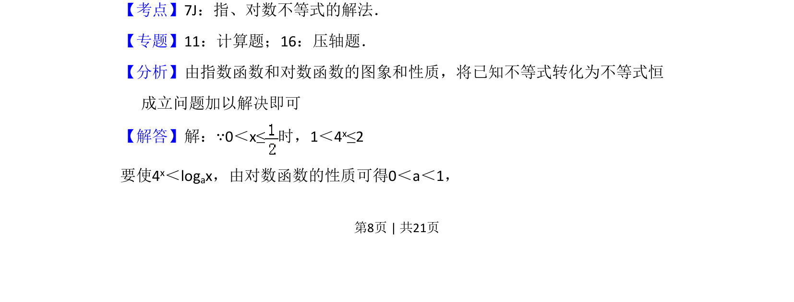
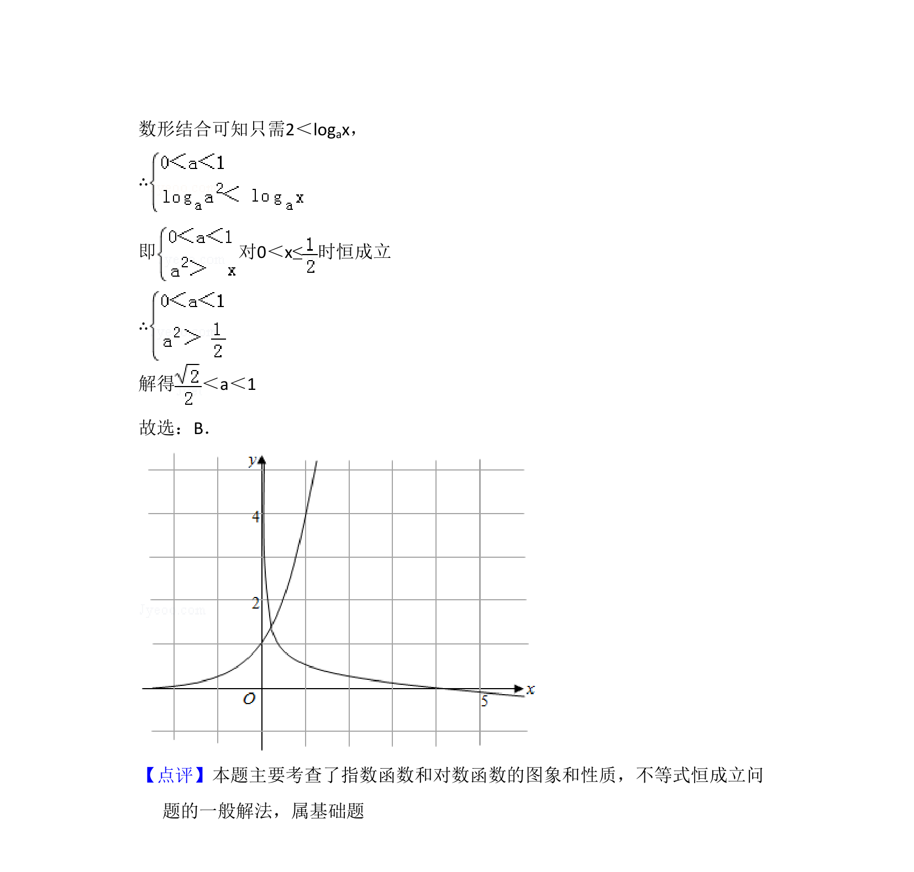

考点：指数函数 对数函数 不等式恒成立 参数取值范围
本题考查给定区间上指数与对数不等式恒成立求参数范围的问题。


📄 原 PDF 第 8 页：
素材/真题/吉林/2008-2024·（吉林）数学高考真题/2012年高考数学试卷（文）（新课标）（解析卷）.pdf
11．（5分）当0＜x≤时，4 x＜logax，则a的取值范围是（ ） A．（0， ）B．（ ，1）C．（1， ）D．（ ，2）
【考点】7J：指、对数不等式的解法．菁优网版权所有 【专题】11：计算题；16：压轴题． 【分析】由指数函数和对数函数的图象和性质，将已知不等式转化为不等式恒 成立问题加以解决即可 【解答】解：∵0＜x≤时，1＜4 x≤2 要使4x＜logax，由对数函数的性质可得0＜a＜1，